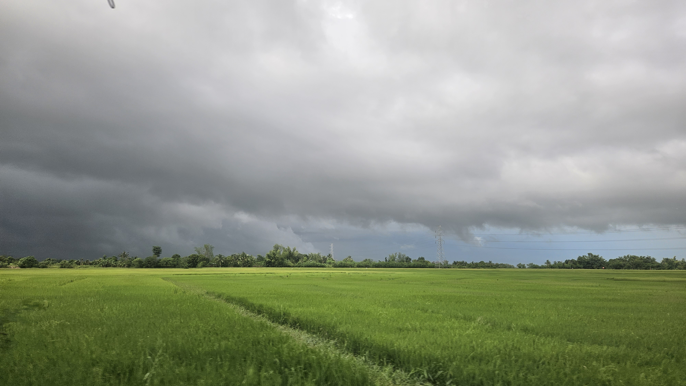
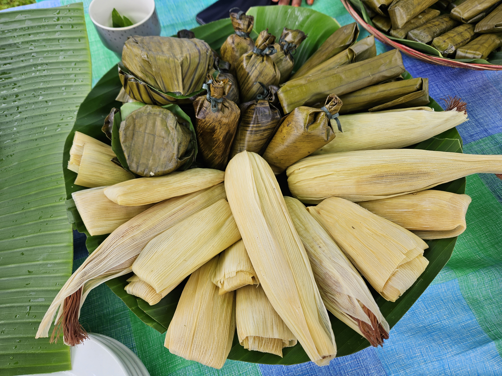
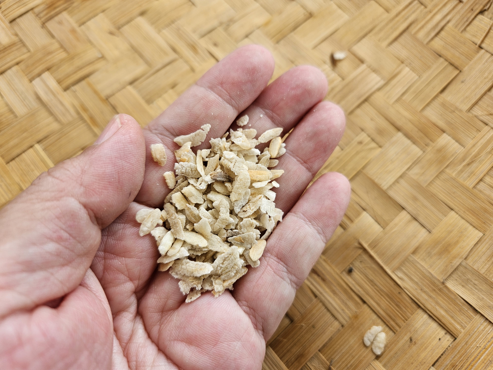
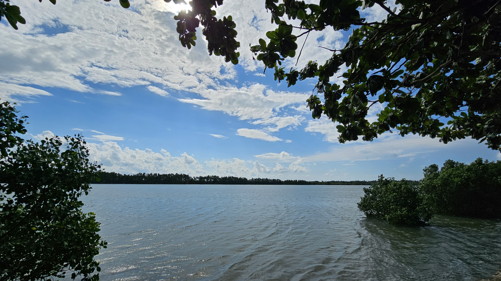
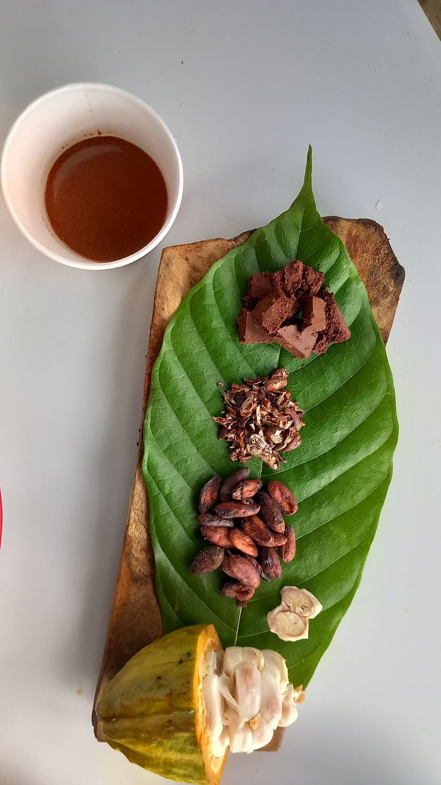
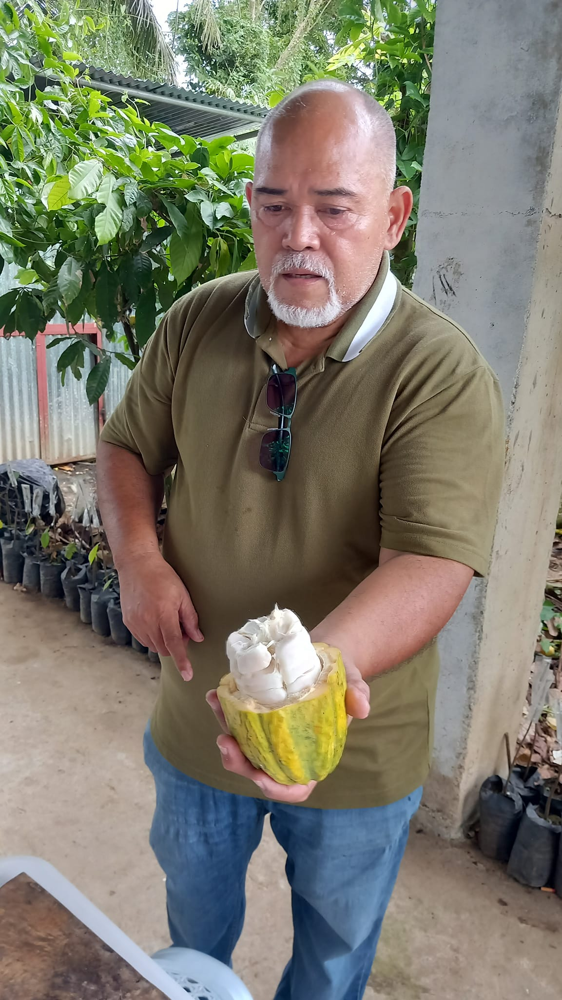

Secure a spot for the event now, REGISTER HERE
Less than an hour to the South of Bacolod lies Bago City. Bago is known as the “Home of historical and natural treasures” as well as being the rice granary of Negros Occidental.
Have you heard about the elusive criollo cacao? We will visit the cacao nursery farm of Christpher Fadriga and listen to his inspiring story. That is just for starters.
Meet the farmers of Mailum and join them in the pre harvest ritual of making pinipig. The community will also prepare native delicacies produced by the organic farmers of Mailum.
Set against the backdrop of the scenic Bago River, Bantayan Park offers a tranquil lunch environment for our Creative Congress participants.
Paper Jewelry making is scheduled in the afternoon. Something to bring home before your flight back home.
Early dinner at the Lanai by Fresh Start.